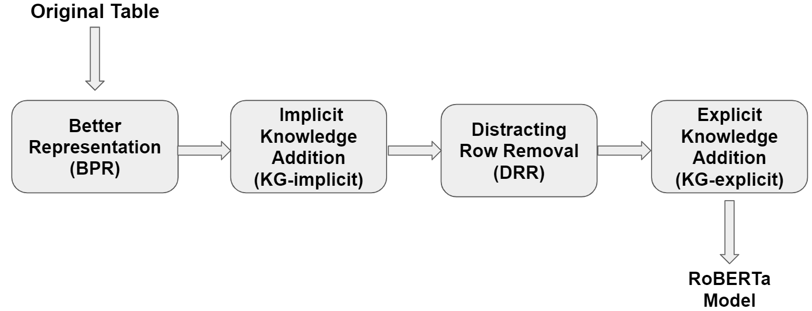
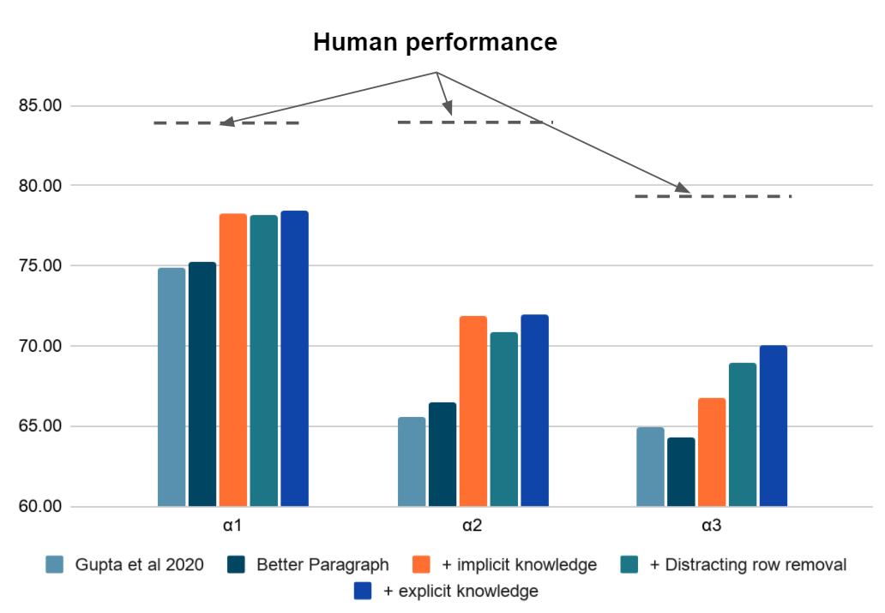

TRANS-KBLSTM : An External Knowledge Enhanced Transformer BiLSTM model for Tabular Reasoning
About
Natural language inference on tabular data is a challenging task. Existing approaches lack the world and common sense knowledge required to perform at a human level. While massive amounts of KG data exist, approaches to integrate them with deep learning models to enhance tabular reasoning are uncommon. In this paper, we investigate a new approach using BiLSTMs to incorporate knowledge effectively into language models. Through extensive analysis, we show that our proposed architecture, Trans-KBLSTM improves the benchmark performance on INFOTABS , a tabular NLI dataset.
The Tabular Inference Problem
Given a premise table, the task is to determine whether given hypothesis is true (entailment), false (contradiction), or undetermined (neutral, i.e. tabular natural language inference. Below is an example from the INFOTABS dataset:

Here, H1 is entailed, H2 is contradiction and H3 is neutral
Why Knowledge?

Predicting the Gold label requires broad understanding of California is located on the
Key Challenges
The following are the key challenges encountered while working on any tabular reasoning problem:
- Poor Table Representation
- Missing Lexical Knowledge
- Presence of Distracting Information
- Missing Domain Knowledge
◈ Poor Table Representation
Challenge
The use of a universal template leads to most sentences being ungrammatical or non-sensible. For example,
❌ The Founded of New York Stock Exchange are May 17, 1792; 226 years ago.
Solution: Better Paragraph Representation
We form entity specific templates by using value entity types DATE or MONEY or CARDINAL or BOOL. We get,
✅ New York Stock Exchange was founded on May17, 1792; 226 years ago.
Further, we add category specific information as well. For example,
New York Stock Exchange is an organization.
◈ Missing Lexical Knowledge
Challenge
Limited training data affects the interpretation of synonyms, antonyns, hypernyms, Hyponyns, and Co-hyponyms words such as fewer, over and negations.
Solution: Implicit Knowledge Addition
We find that pre-training on a large Natural Language Inference dataset helps expose the model to diverse lexical constructions and the representation in also now more tuned to the NLI task.
So firstly, we intermediately pre-train with MNLI data and then subsequently fine tune on the INFOTABS dataset.
◈ Presence of Distracting Information
Challenge
Only select rows are relevant for a given hypothesis. For example, the key No. of listings is enough for H1 and H2. Furthermore, due to BERT tokenization limit, useful rows in longer tables might be cropped.
Solution: Distracting Row Removal
Here, we select only rows relevant to the hypothesis. For this, we adopt the Alignment based retrieval algorithm with fastText vectors as detailed in Yadav et al. (2019, 2020). For example, we prune the table as below for the hypotheses H1 and H2:
◈ Missing Domain Knowledge
Challenge
In the case of H3, we need to interpret Volume in the financial context. For example, here, volume must be interpreted as:
✅ In capital markets, volume, is the total number of a security that was traded during a given period of time.
rather than
❌ In thermodynamics, volume of a system is an extensive parameter for describing its phase state.
Solution: Explicit Knowledge Addition
We append explicit information to enrich the keys. This helps improve model’s ability to disambiguate the meaning of the keys.
Approach
- Use BERT on wordnet examples to find key embeddings.
- Get key embeddings from premise using BERT.
- Find the best match i.e according to similarity and add its definition to the premise.
Solution Pipeline
We apply the modifications described above sequentially by following the pipeline illustrated as below:

Experimental Results
We observe significant improvements in adversarial ɑ2 and ɑ3 datasets. Further, ablation study indicates all changes are needed, knowledge addition being the most important. 
Conclusion
Our proposed pre-processing leads to significant improvements on the INFOTABS dataset and especially beneficial for the adversarial ɑ2 and ɑ3 datasets. The proposed solutions are applicable to question answering and generation problems with both tabular and textual inputs. We recommend that these modifications should be standardized across other table reasoning tasks.
TabPert
You should check our EMNLP 2021 paper which is a tabular perturbation platform to generate counterfactual examples.
People
The following people have worked on the paper "Incorporating External Knowledge to Enhance Tabular Reasoning":

Citation
Please cite our paper as below.
@inproceedings{neeraja-etal-2021-incorporating,
title = "Incorporating External Knowledge to Enhance Tabular Reasoning",
author = "Neeraja, J. and
Gupta, Vivek and
Srikumar, Vivek",
booktitle = "Proceedings of the 2021 Conference of the North American Chapter of the Association for Computational Linguistics: Human Language Technologies",
month = jun,
year = "2021",
address = "Online",
publisher = "Association for Computational Linguistics",
url = "https://www.aclweb.org/anthology/2021.naacl-main.224",
pages = "2799--2809",
abstract = "Reasoning about tabular information presents unique challenges to modern NLP approaches which largely rely on pre-trained contextualized embeddings of text. In this paper, we study these challenges through the problem of tabular natural language inference. We propose easy and effective modifications to how information is presented to a model for this task. We show via systematic experiments that these strategies substantially improve tabular inference performance.",
}Acknowledgement
Authors thank members of the Utah NLP group for their valuable insights and suggestions at various stages of the project; and NAACL 2021 reviewers for their helpful comments. We also thank the support of NSF Grants No. 1801446 and 1822877, and a generous gift from Verisk Inc.